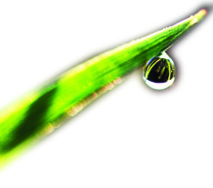
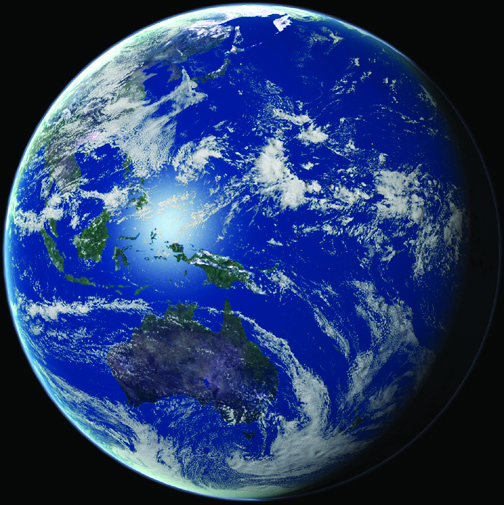
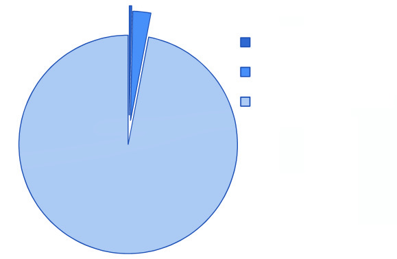
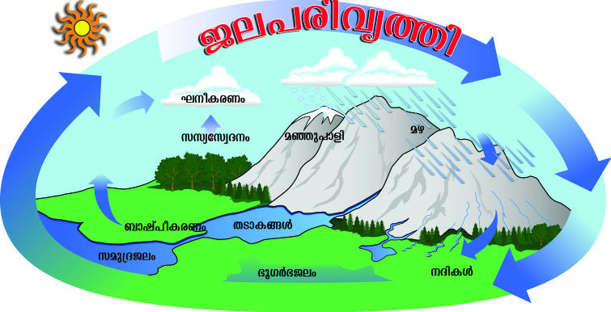
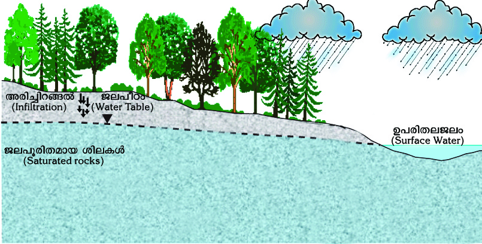
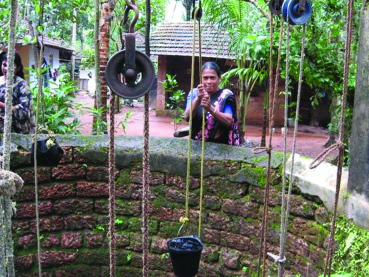
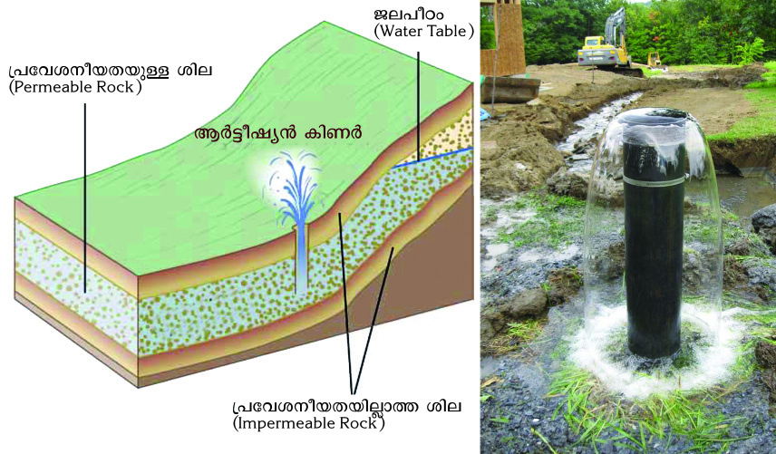
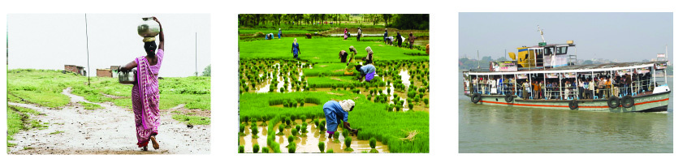
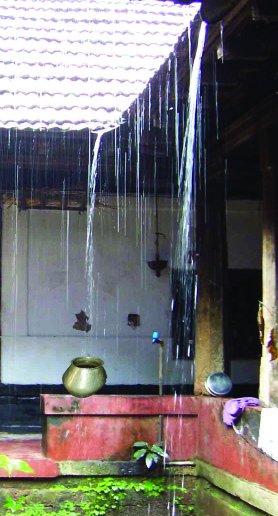
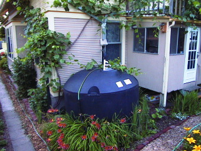

`qan-bn¬ Pohs‚ D¤-h-sØ-°p-dn®v \n߃ ap≥¢m-kn¬ ]Tn-®Xv
Hm¿°p-∂nt√? Pohs‚ \ne-\n¬∏n\v hmbp F∂-Xp-t]mse Xs∂
Pehpw AXy-¥m-t]-£n-X-amWv. temI-PeZn-\m-N-c-W-hp-ambn _‘-
s∏´v apI-fn¬ \¬In-bn-cn-°p∂ t]mÿ {i≤n-°q. \nXy-Po-hn-X-Øn¬
C{X-tbsd {]m[m-\y-ap≈ Pew F∂ {]Ir-Xn-hn-`-h-Øns‚ e`y-X-
`qan-bnse Pew
Page 75
Page 76




2345678901234567890123456789012123456789012345678901234567890121234567890123456789012345678901212345678901234567890123456789012123456789012345678901234567890121234567890
2345678901234567890123456789012123456789012345678901234567890121234567890123456789012345678901212345678901234567890123456789012123456789012345678901234567890121234567890
2345678901234567890123456789012123456789012345678901234567890121234567890123456789012345678901212345678901234567890123456789012123456789012345678901234567890121234567890
2345678901234567890123456789012123456789012345678901234567890121234567890123456789012345678901212345678901234567890123456789012123456789012345678901234567890121234567890
2345678901234567890123456789012123456789012345678901234567890121234567890123456789012345678901212345678901234567890123456789012123456789012345678901234567890121234567890
2345678901234567890123456789012123456789012345678901234567890121234567890123456789012345678901212345678901234567890123456789012123456789012345678901234567890121234567890
2345678901234567890123456789012123456789012345678901234567890121234567890123456789012345678901212345678901234567890123456789012123456789012345678901234567890121234567890
2345678901234567890123456789012123456789012345678901234567890121234567890123456789012345678901212345678901234567890123456789012123456789012345678901234567890121234567890
2345678901234567890123456789012123456789012345678901234567890121234567890123456789012345678901212345678901234567890123456789012123456789012345678901234567890121234567890
2345678901234567890123456789012123456789012345678901234567890121234567890123456789012345678901212345678901234567890123456789012123456789012345678901234567890121234567890
1
1
1
1
1
1
1
1
1
1
`qan-bnse Pew
196
kmaqlyimkv{Xw
kmaqlyimkv{Xw
sb-°p-dn®v t]mÿ apt∂m´phbv°p∂ Bi¶ ¢mkn¬ N¿®
sNøq. kIe Poh-Pm-e-ß-fp-sSbpw \ne-\n¬∏n\v Ahiyw th≠
Pehn`hs-Ø-°p-dn®v IqSp-X¬ Adn-bm≥ {ian-°mw.
Poh-Pew
kuc-bqY-Ønse Poh{Kl-amWv `qan. Poh≥ BZy-ap-≠m-bXv
Pe-Øn-emWv F∂p Icp-X-s∏-Sp-∂p.
Pew GsX√mw Ah-ÿ-I-fn¬ `qan-bn¬
\ne\n¬°p-∂p-s≠∂v \n߃ ap≥
¢mkpIfn¬ ]Tn-®n-´p-≠-t√m.
`qan-°v Pe-{Klw F∂pw t]cp≠v. AsX-
¥p-sIm-≠m-bn-cn-°mw? X∂n-cn-°p∂
Nn{Xw (Nn{Xw 12.1) {i≤n-°q.
`qanbpsS hnkvXr-Xn-bpsS ap°m¬]¶pw
Pe-ambXn-\mem-Wv Cßs\ hnti-jn∏n-
°p-∂-sX∂v t_m[y-am-bncn°pat√m. D]-cn-X-e-Øns‚ GXm≠v
71 iX-am-\hpw Pe-am-b-Xn-\m¬ _ln-cm-Im-iØp\n∂p t\m°p-
tºmƒ `qan Hcp \oe-tKm-f-am-Wv. Nn{X-Øn¬ \oe-\n-d-Øn¬ ImWp-
∂Xv kap-{Z-ß-fm-Wv.
Pew XWp-Øpd-bp-tºmƒ km{μX Ipd-
bp-∂Xp aqeamWv a™p-I´ Pe-Øn¬
s]mßn-°n-S-°p-∂Xv. Cu khn-ti-j-X-sIm-
≠mWv a™p-aq-Snb Pem-i-b-ß-fn¬ a™p-
]m-fn-°-Sn-bn¬ Pew ImW-s∏-Sp-∂-Xv. A√m-bn-
cp-s∂-¶n¬ ssiXy-ta-J-e-I-fnse Pem-i-b-߃
apgp-h≥ XWp-Øp-d-bp-Ibpw Pe-Po-hn-I-sf√mw
NsØm-Sp-ßp-Ibpw sNøp-am-bn-cp-∂p.
kap-{Z-ßsf IqSmsX at‰-sX√mw Pe-t{km-X-kp-Isf-°p-dn®v
\n߃°-dnbmw?
\o-cp-d-h-I-ƒ
-Nn{Xw 12.1
Page 77




2345678901234567890123456789012123456789012345678901234567890121234567890123456789012345678901212345678901234567890123456789012123456789012345678901234567890121234567890
2345678901234567890123456789012123456789012345678901234567890121234567890123456789012345678901212345678901234567890123456789012123456789012345678901234567890121234567890
2345678901234567890123456789012123456789012345678901234567890121234567890123456789012345678901212345678901234567890123456789012123456789012345678901234567890121234567890
2345678901234567890123456789012123456789012345678901234567890121234567890123456789012345678901212345678901234567890123456789012123456789012345678901234567890121234567890
2345678901234567890123456789012123456789012345678901234567890121234567890123456789012345678901212345678901234567890123456789012123456789012345678901234567890121234567890
2345678901234567890123456789012123456789012345678901234567890121234567890123456789012345678901212345678901234567890123456789012123456789012345678901234567890121234567890
2345678901234567890123456789012123456789012345678901234567890121234567890123456789012345678901212345678901234567890123456789012123456789012345678901234567890121234567890
2345678901234567890123456789012123456789012345678901234567890121234567890123456789012345678901212345678901234567890123456789012123456789012345678901234567890121234567890
2345678901234567890123456789012123456789012345678901234567890121234567890123456789012345678901212345678901234567890123456789012123456789012345678901234567890121234567890
2345678901234567890123456789012123456789012345678901234567890121234567890123456789012345678901212345678901234567890123456789012123456789012345678901234567890121234567890
`qan-bnse Pew
197
Ãm≥tU¿Uv VIII
Ãm≥tU¿Uv VIII
{[ph-{]-tZ-i-ß-fnepw Db¿∂
]¿h-X-ß-fnepw Dd-™p-In-S-
°p∂ a™pw Nne {]tZ-i-ß-
fnse `qK¿`-P-ehpw \ap°v A{]m-]y-
amb ip≤-P-e-am-Wv.
`qan-bn¬ eh-W-P-eamtWm ip≤-P-
e-amtWm IqSp-Xep≈Xv?
`qan-bnse BsI Pe-Øns‚ F{X iX-am-\-amWv eh-W-
Pew?
a\p-jy\v e`y-amb ip≤-Pew F{X iX-am-\-ap≠v?
`qan-bn¬ ip≤PeØns‚ Afhv hf-sc-°p-d-hmWv F∂p t_m[y-
am-b-t√m.
Cu ip≤-Pew \mw D]-tbm-Kn-°p-tºmƒ Xo¿∂pt]mInt√? Fß-
s\-bmWv \ΩpsS ]pg-I-fnepw InW-dp-I-fnepw ho≠pw ho≠pw
ip≤-Pew \nd-bp-∂Xv?
Pe-]-cn-hrØn (Water Cycle)
NphsS \¬In-b Ub{Kw \nco-£n-°p.
(Nn{Xw 12. 2)
ip≤-Pew 0.33%
A{]m-]y-amb ip≤-Pew 2.67%
ehW-Pew 97%
Page 78

2345678901234567890123456789012123456789012345678901234567890121234567890123456789012345678901212345678901234567890123456789012123456789012345678901234567890121234567890
2345678901234567890123456789012123456789012345678901234567890121234567890123456789012345678901212345678901234567890123456789012123456789012345678901234567890121234567890
2345678901234567890123456789012123456789012345678901234567890121234567890123456789012345678901212345678901234567890123456789012123456789012345678901234567890121234567890
2345678901234567890123456789012123456789012345678901234567890121234567890123456789012345678901212345678901234567890123456789012123456789012345678901234567890121234567890
2345678901234567890123456789012123456789012345678901234567890121234567890123456789012345678901212345678901234567890123456789012123456789012345678901234567890121234567890
2345678901234567890123456789012123456789012345678901234567890121234567890123456789012345678901212345678901234567890123456789012123456789012345678901234567890121234567890
2345678901234567890123456789012123456789012345678901234567890121234567890123456789012345678901212345678901234567890123456789012123456789012345678901234567890121234567890
2345678901234567890123456789012123456789012345678901234567890121234567890123456789012345678901212345678901234567890123456789012123456789012345678901234567890121234567890
2345678901234567890123456789012123456789012345678901234567890121234567890123456789012345678901212345678901234567890123456789012123456789012345678901234567890121234567890
2345678901234567890123456789012123456789012345678901234567890121234567890123456789012345678901212345678901234567890123456789012123456789012345678901234567890121234567890
1
1
1
1
1
1
1
1
1
1
`qan-bnse Pew
198
kmaqlyimkv{Xw
kmaqlyimkv{Xw
]e-bn-S-ß-fnepw
NqSp≈ Pew `qan-
°p-≈n¬ \n∂v D]-cn-X-
e-Øn-te°v Hgp-Im-dp-
≠v. CØcw \oscm-gp-
°p-I-fmWv NpSp-\o-cp-d-h-Iƒ. lnam-e-b-
Øns‚ Xmgvhc-I-fn¬ Ch [mcmfw
ImWmw.
acp-`q-an-I-fn¬ Pe-e-`y-X-bp≈ CS-ß-
fmWv acp-∏-®-Iƒ. acp-∏-®-Iƒ tI{μo-I-
cn-®mWv acp-`q-an-I-fnse sNdp-P-\-hm-k-
tI-{μ-߃ \ne-hn-ep-≈-Xv.
Nn{Xw 12.2 \nco-£n®v Pew GsX√mw Ah-ÿ-I-fn-eqsS IS-∂p-
t]m-Ip∂p F∂p a\- n-em-°q.
XpS¿∂v NphsS ImWp∂ tNmZy-߃°v DØ-c-sa-gp-Xp-I.
Pem-i-b-ß-fnse Pe-Øn¬ kqcy-Xm-]-ta¬°p-tºmƒ
F¥p kw`-hn-°p∂p?
\Zn-I-fn-te°pw XSm-I-ß-fn-te°pw Pe-sa-Øp-∂-sX-
ßs\?
Cu Pe-Øn\v XpS¿∂v F¥p kw`-hn-°p-∂p?
Pe-t{km-X- p-Isf D]-cn-XePet{kmX-kp-Iƒ, `qK¿`-Pet{kmX-
kp-Iƒ F∂n-ßs\ c≠mbn Xncn-°mw.
kap-{Z-߃, \Zn-Iƒ, XSm-I-߃, Imb-ep-Iƒ F∂nh-sbm-s°-
bmWv D]-cn-X-e -Pet{kmX- p-Iƒ. `qan-bpsS D]-cn-X-e-tØmSv
hfsc ASp-Øm-bn-cn°pw Ch-bnse Pe-\n-c-∏v. InW¿, Ipfw,
Ipg¬°n-W¿ XpS-ßn-bh `qK¿`-Pe t{kmX- p-I-fm-Wv.
aÆn-\-Sn-bnse Pew
agbmWv aÆn-te°p sh≈-sa-Øn-°p-∂-Xv. ag-Øp-≈n-Iƒ aÆnse
kq£va-kp-jn-c-ß-fn-te°p In\n-™n-d-ßp-Ibpw AhnsS tiJ-
cn-°-s∏-Sp-Ibpw sNøp-∂p. aÆn¬ \nc-h[n
kq£va-kp-jn-c-ß-fp≠v (Pore spaces). kpjn-c-
ß-fp≈ Ah-ÿ-bmWv kpjn-cn-Xm-hÿ
(Porosity). Ifn-a-Æv kpjn-cn-Xm-h-ÿ-bp≈
]Zm¿YØns\mcpZm-l-c-W-amWv. km[m-cW
Cu kpjn-c-ß-fn¬ hmbp \nd-™n-cn-°pw. ag-
bn-eqsStbm at‰m Cu¿∏-sa-Øp-∂-tXmsS Cu
kpjn-c-ß-fn-¬ Pew \nd-bpw. aÆn¬ am{X-a-√,
Nne-bn\w ine-I-fnepw kpjn-cn-Xm-hÿ IqSp-
Xembn-cn-°pw. AØcw ine-I-fn¬ Gsd Pew
kw`-cn-°-s∏-Spw. F∂m¬ kpjn-c-߃ ]c-
kv]cw _‘n-∏n-°-s∏-´n-cn-°p-∂Xcw ine-I-
fp≈ CS-ß-fn¬ am{X-amWv Pe-e-`yX D≠m-bn-
cn-°p-I. kpjn-c-ß-fn-eqsS Pe-Øn\v \oßm≥
Ign-bp-∂-XpsIm≠m-WnXv. ine-I-fpsS Cu
KpW-hn-ti-j-sØ-bmWv {]th-i-\o-bX
(Permeability) F∂p ]d-bp-∂-Xv. F√m kpjn-
Page 79


2345678901234567890123456789012123456789012345678901234567890121234567890123456789012345678901212345678901234567890123456789012123456789012345678901234567890121234567890
2345678901234567890123456789012123456789012345678901234567890121234567890123456789012345678901212345678901234567890123456789012123456789012345678901234567890121234567890
2345678901234567890123456789012123456789012345678901234567890121234567890123456789012345678901212345678901234567890123456789012123456789012345678901234567890121234567890
2345678901234567890123456789012123456789012345678901234567890121234567890123456789012345678901212345678901234567890123456789012123456789012345678901234567890121234567890
2345678901234567890123456789012123456789012345678901234567890121234567890123456789012345678901212345678901234567890123456789012123456789012345678901234567890121234567890
2345678901234567890123456789012123456789012345678901234567890121234567890123456789012345678901212345678901234567890123456789012123456789012345678901234567890121234567890
2345678901234567890123456789012123456789012345678901234567890121234567890123456789012345678901212345678901234567890123456789012123456789012345678901234567890121234567890
2345678901234567890123456789012123456789012345678901234567890121234567890123456789012345678901212345678901234567890123456789012123456789012345678901234567890121234567890
2345678901234567890123456789012123456789012345678901234567890121234567890123456789012345678901212345678901234567890123456789012123456789012345678901234567890121234567890
2345678901234567890123456789012123456789012345678901234567890121234567890123456789012345678901212345678901234567890123456789012123456789012345678901234567890121234567890
`qan-bnse Pew
199
Ãm≥tU¿Uv VIII
Ãm≥tU¿Uv VIII
cn-X-]Zm¿Y-ß-fnepw {]th-i-\o-bX D≠m-bn-s°m-≈-W-sa-∂n-√.
DZm-l-c-W-ambn, Ifn-a-Æn\v kpjn-cn-Xm-hÿ Gsd-bp-s≠-¶nepw
{]th-i-\o-bX Xosc-°p-d-hm-Wv. AXp PesØ D≈n-te°v IS-
Øn-hn-Sn√ F∂¿Yw. a‰nSßsf At]£n®v s\¬∏m-S-ß-fn¬
sh≈w sI´n-°n-S-°p-∂-Xns‚ ImcWw a\- n-em-bn-t√?
`qan-bn¬ s]bvXn-d-ßp∂ ag-sh≈w ag-bn-√mØ Ime-ß-fn-te°v
kw`-cn®phbv°m-\p≈ kwhn-[m-\w {]IrXn G¿s∏-Sp-Øn-bn-´p-
≠v. ag-sh≈w aÆn-\-Sn-bn-te°v Du¿∂n-d-ßm-
\p≈ Ah-kcw \mw XS- -s∏-Sp-Øn-bm¬
th\¬°m-eØv PeZu¿e`y-am-bn-cn°pw
^ew.
InW-dp-\n¿am-W-Øn\pw a‰m-h-iy-߃°p-
sams° Ipgn-sb-Sp-°p-∂Xv \n߃ {i≤n-®n-´p-
≠m-hpw. Bgw-Iq-Sp-t¥mdpw s]mXpsh aÆns‚
\\hv h¿[n-°p-∂Xp ImWmw. ho≠pw Bgw-
Iq-´n-bmtem? ine-I-fnse kpjn-c-ß-fn¬ \nd-
™n-cn-°p∂ Pew In\n-™n-dßn Ipgn-bn¬
\nd-bp-∂p. F√m kpjn-c-ßfpw Pew-sIm≠v \nd-™n-cn-°p∂
`mK-am-b-Xn-\m-emWv Cu Pe-k-ar-≤n. `qan-°-Sn-bnse Pekar-≤-
amb `mK-Øns‚ apIƒ∏c-∏m-Wv -"Pe-]oTw' (Water table) F∂-dn-
b-s∏-S-p∂-Xv. `qan-°-Sn-bn¬ kw`-cn-°s∏´ncn-°p∂ Pe-amWv `qK¿`-
Pew (Underground water).
AIyp-^-dp-Iƒ (Aquifers).
ta¬a-Æn¬\n∂v Du¿∂n-d-ßp∂
Pew aÆnse kpjn-c-ßfnepw ]md-bnSp-
°p-I-fnepw kw`-cn-°-s∏-Sp-∂ \oc-d-I-
fmWv AIyp-^-dp-Iƒ (Aquifers). Cßs\
tiJ-cn-°-s∏-Sp∂ Pe-amWv InW-dn-eqsS
\ap°p e`n-°p-∂Xv.
Page 80



2345678901234567890123456789012123456789012345678901234567890121234567890123456789012345678901212345678901234567890123456789012123456789012345678901234567890121234567890
2345678901234567890123456789012123456789012345678901234567890121234567890123456789012345678901212345678901234567890123456789012123456789012345678901234567890121234567890
2345678901234567890123456789012123456789012345678901234567890121234567890123456789012345678901212345678901234567890123456789012123456789012345678901234567890121234567890
2345678901234567890123456789012123456789012345678901234567890121234567890123456789012345678901212345678901234567890123456789012123456789012345678901234567890121234567890
2345678901234567890123456789012123456789012345678901234567890121234567890123456789012345678901212345678901234567890123456789012123456789012345678901234567890121234567890
2345678901234567890123456789012123456789012345678901234567890121234567890123456789012345678901212345678901234567890123456789012123456789012345678901234567890121234567890
2345678901234567890123456789012123456789012345678901234567890121234567890123456789012345678901212345678901234567890123456789012123456789012345678901234567890121234567890
2345678901234567890123456789012123456789012345678901234567890121234567890123456789012345678901212345678901234567890123456789012123456789012345678901234567890121234567890
2345678901234567890123456789012123456789012345678901234567890121234567890123456789012345678901212345678901234567890123456789012123456789012345678901234567890121234567890
2345678901234567890123456789012123456789012345678901234567890121234567890123456789012345678901212345678901234567890123456789012123456789012345678901234567890121234567890
1
1
1
1
1
1
1
1
1
1
`qan-bnse Pew
200
kmaqlyimkv{Xw
kmaqlyimkv{Xw
ag-°m-eØv Pe-]oTw Db-cp-∂p, th\¬°m-eØv Xmgp-∂p. CsX-
¥p-sIm-≠m-bn-cn-°mw?
InW-dp-Iƒ ]e-hn[w
Nn{Xw t\m°q.
\ΩpsS \m´n¬ InW-dp-Iƒ k¿h-km-[m-c-W-amWv. Pe-
]o-T-Øns‚ apIƒ∏-c-∏mWv InW‰nse Pe-\n-c-∏v.
Pe-]o-Tw Gsd XmgvN-bn-em-sW-¶n¬ InW¿ Ipgn-°pI
Ffp∏-a-√. AØcw kμ¿`-ß-fn¬ Ipg¬°n-W-dmWv
A`n-Im-ayw. `qan-°-Sn-bn-te°v b{¥-k-lm-b-tØmsS
]md- Xp-c-∂mWv Ipg¬°n-W¿ (Tube Well) ÿm]n-
°p-∂-Xv.
Acn-∏-°n-W-dp-Iƒ
aW¬ \nd™ {]tZ-i-ßfn¬ \n¿an-°p∂ Bgw Ipd™
Ipg¬In-W-dp-I-fmWv Acn-∏-°n-W-dp-Iƒ (Filter point wells) F∂-
dn-b-s∏-Sp-∂-Xv.
B¿´o-jy≥ InW-dp-Iƒ (Artesian Wells)
Page 81

2345678901234567890123456789012123456789012345678901234567890121234567890123456789012345678901212345678901234567890123456789012123456789012345678901234567890121234567890
2345678901234567890123456789012123456789012345678901234567890121234567890123456789012345678901212345678901234567890123456789012123456789012345678901234567890121234567890
2345678901234567890123456789012123456789012345678901234567890121234567890123456789012345678901212345678901234567890123456789012123456789012345678901234567890121234567890
2345678901234567890123456789012123456789012345678901234567890121234567890123456789012345678901212345678901234567890123456789012123456789012345678901234567890121234567890
2345678901234567890123456789012123456789012345678901234567890121234567890123456789012345678901212345678901234567890123456789012123456789012345678901234567890121234567890
2345678901234567890123456789012123456789012345678901234567890121234567890123456789012345678901212345678901234567890123456789012123456789012345678901234567890121234567890
2345678901234567890123456789012123456789012345678901234567890121234567890123456789012345678901212345678901234567890123456789012123456789012345678901234567890121234567890
2345678901234567890123456789012123456789012345678901234567890121234567890123456789012345678901212345678901234567890123456789012123456789012345678901234567890121234567890
2345678901234567890123456789012123456789012345678901234567890121234567890123456789012345678901212345678901234567890123456789012123456789012345678901234567890121234567890
2345678901234567890123456789012123456789012345678901234567890121234567890123456789012345678901212345678901234567890123456789012123456789012345678901234567890121234567890
`qan-bnse Pew
201
Ãm≥tU¿Uv VIII
Ãm≥tU¿Uv VIII
{]th-i-\o-bX Xosc-bn-√mØ c≠p inem-]m-
fn-Iƒ°n-S-bn-embn {]th-i-\o-bX Gsdbp≈
Hcp inem-]mfn Ds≠-∂n-cn-°-s´. Cu inem-
]m-fn-bn-te°v Ipgn-®m¬ AXn-eqsS Pew
kΩ¿±wsIm≠v Db¿∂v D]-cn-X-e-Øn-se-Øpw.
AØcw InW-dp-I-fmWv B¿´o-jy≥ InW-dp-
Iƒ F∂-dn-b-s∏-Sp-∂-Xv.
{]th-i-\o-b-X-bp≈ inem-]m-fn-bn-te°v Fhn-
sStbm Hcp `mKØv sh≈-Øn\v {]th-in-°m≥
Ign-bp-∂-Xp-sIm-≠m-Wv Cu Pe-e-`y-X.
\ocp-dh (Spring)
\ΩpsS \m´n¬ ag-°m-eØv ]d-ºp-I-fnepw Ip∂n≥Ncn-hp-I-fn-
ep-sams° Dd-h-Iƒ cq]w-sIm-≈p∂Xv I≠n-
´n-t√? Nne ÿe-ß-fn¬ CXv ÿnc-ambn D≠m-
Ipw, a‰n-S-ß-fn¬ Ah ag-°mew Ign-bp-∂-
tXmsS h‰n-t∏m-Ipw.
Pe-]oTw `utam-]-cn-X-esØ kv]¿in-°p∂
CS-ß-fn¬ Pew `qan-°p-≈n¬\n∂v D]-cn-X-e-
Øn-eqsS Hgp-Ipw. CXmWv \ocp-dh (Spring).
Nne ÿe-ß-fn¬ Cß-s\-sbm-gp-Ip∂ sh≈-
Øn\v NqSp-≠m-bn-cn-°pw. CXv NpSp-\o-cp-dh
(Hot spring) F∂-dn-b-s∏-Sp-∂p.
Kok-dp-Iƒ (Geysers)
`qan-°p-≈n¬ \n∂p \n›nX CS-th-f-I-fn¬
NqSp-sh-≈hpw \ocm-hnbpw i‡ambn ]pd-
tØ°p {]h-ln-°p∂ {]Xn-`m-k-amWv Kok-
dp-Iƒ. Ata-cn-°-bnse sbt√m tÃm¨ \mj-
W¬ ]m¿°nse HmƒUv s^bvXv^pƒ Kok¿
CXn-s\m-cpZm-l-c-W-amWv.
Imk¿tIm-S≥ taJ-e-bnse
kpc¶InW-dp-Iƒ
(Horizontal wells)
IpSn-sh≈tiJ-c-
W - Ø n - \ m b n
Imk¿tImUv,
Z£n-W-I-∂U
Pn√-I-fnep≈h¿
D]-tbm-Kn-°p∂
am¿K-amWv kpc-¶-°n-W-dp-I-fpsS \n¿am-
Ww. Ip∂p-I-fpsS Xmgvhm-c-Øn¬ Xnc-
›o-\-ambn D≈n-te°p Xpc-∂mWv Ch
\n¿an-°p-∂-Xv. IjvSn®v Hcmƒ°v IS-
°m≥ am{Xw hen-∏-ap≈ kpc-¶- (Xpc-
¶)°n-W-dp-I-fn-eqsS sh≈w Xmt\ ]pd-
tØ-s°m-gp-In-sb-Øpw F∂Xv CXns‚
ta∑-bm-Wv. Atd-_ybpambp-≠m-bn-
cp∂ I®-h-S-_-‘-ß-fn-eq-sS-bmWv Cu
hnZy ChnsSbp-sa-Øn-b-sX∂p Icp-X-
s∏-Sp-∂p.
{^m≥knse B¿t´m-bvkv (Artois)
F∂
ÿe-ØmWv
Pew
kΩ¿±Øm¬ Db¿∂v D]-cn-X-e-Øn¬
FØp-∂-Xcw InW-dp-Iƒ BZy-ambn
{]Nm-c-Øn-em-b-Xv. AtX-Øp-S¿∂v
temI-Øns‚ CX-c-`m-K-ß-fn¬ \n¿an-
°p∂ CØcw InW-dp-Iƒ B¿´o-jy≥
InW-dp-Iƒ F∂-dn-b-s∏-Sm≥ XpS-ßn.
Page 82


2345678901234567890123456789012123456789012345678901234567890121234567890123456789012345678901212345678901234567890123456789012123456789012345678901234567890121234567890
2345678901234567890123456789012123456789012345678901234567890121234567890123456789012345678901212345678901234567890123456789012123456789012345678901234567890121234567890
2345678901234567890123456789012123456789012345678901234567890121234567890123456789012345678901212345678901234567890123456789012123456789012345678901234567890121234567890
2345678901234567890123456789012123456789012345678901234567890121234567890123456789012345678901212345678901234567890123456789012123456789012345678901234567890121234567890
2345678901234567890123456789012123456789012345678901234567890121234567890123456789012345678901212345678901234567890123456789012123456789012345678901234567890121234567890
2345678901234567890123456789012123456789012345678901234567890121234567890123456789012345678901212345678901234567890123456789012123456789012345678901234567890121234567890
2345678901234567890123456789012123456789012345678901234567890121234567890123456789012345678901212345678901234567890123456789012123456789012345678901234567890121234567890
2345678901234567890123456789012123456789012345678901234567890121234567890123456789012345678901212345678901234567890123456789012123456789012345678901234567890121234567890
2345678901234567890123456789012123456789012345678901234567890121234567890123456789012345678901212345678901234567890123456789012123456789012345678901234567890121234567890
2345678901234567890123456789012123456789012345678901234567890121234567890123456789012345678901212345678901234567890123456789012123456789012345678901234567890121234567890
1
1
1
1
1
1
1
1
1
1
`qan-bnse Pew
202
kmaqlyimkv{Xw
kmaqlyimkv{Xw
`qan-°p-≈nse hnS-hp-I-fn-eqsS XmWn-d-ßp∂ Pew amKva-bpambn
kº¿°-Ønemhp∂Xp-sIm-≠mWv NqSp-\o-cp-d-h-Ifpw Kok-dp-
Ifpw cq]w-sIm-≈p∂-Xv.
XÆo¿ØS-߃
D]-cn-X-e-Pew kw`-cn-°-s∏-Sp∂ kzm`m-hnI
CS-ß-fmWv XÆo¿Ø-S-߃. hb-ep-Iƒ, Ipf-
߃, NXp-∏p-\n-e-߃ XpS-ßn F√m Xmgv∂
{]tZ-i-ßfpw XÆo¿Ø-S-߃ F∂ hn`m-K-
Øn¬s∏Spw.
Chn-S-ß-fn¬ tiJ-cn-°-s∏-Sp∂ Pe-amWv
`qK¿`Pe-Øns‚ `mK-am-Ip-∂-Xv. {]Ir-Xn-
bnse kzm`m-hnI Pe-kw-`-cWn-I-fmb
XÆo¿Ø-S-߃ \nI-Øp-∂Xv Xmsg kqNn-
∏n-°p∂ Xc-Øn¬ \nc-h[n ]mcn-ÿnXnI{]iv\-߃°p hgn-
sX-fn-°pw.
InW-dp-I-fn¬ Pe-\n-c∏p Xmgp∂p.
sNdnb ag-bn¬t∏mepw \Zn-I-fn¬ sh≈-s∏m-°-ap-≠m-Ip-
∂p.
\nßfpsS {]tZ-i-Øp≈ XÆo¿ØS-ß-sf-°p-dn®v hnh-c-߃
tiJ-cn-°q. Ah kwc-£n-°m-\p≈ {ia-ß-fn¬ ]¶mfn-bmIq.
XÆo¿Ø-S-ß-fpsS {]m[m-\y-sØ-°p-dn®v IqSp-X¬
Imcy-߃ a\- n-em°n temI -X-Æo¿ØS-Zn-\-Øn¬
kvIqfn¬ Hcp Nn{X-{]-Z¿i\w kwLSn∏n-°p-I.
NpSp-\o-cp-dh ˛ aWn-I-c¨, lnam-N¬{]-tZiv
Kok¿ ˛ sbt√m-tÃm¨ \mj-W¬]m¿°v, hSt° Ata-cn°
Page 83


2345678901234567890123456789012123456789012345678901234567890121234567890123456789012345678901212345678901234567890123456789012123456789012345678901234567890121234567890
2345678901234567890123456789012123456789012345678901234567890121234567890123456789012345678901212345678901234567890123456789012123456789012345678901234567890121234567890
2345678901234567890123456789012123456789012345678901234567890121234567890123456789012345678901212345678901234567890123456789012123456789012345678901234567890121234567890
2345678901234567890123456789012123456789012345678901234567890121234567890123456789012345678901212345678901234567890123456789012123456789012345678901234567890121234567890
2345678901234567890123456789012123456789012345678901234567890121234567890123456789012345678901212345678901234567890123456789012123456789012345678901234567890121234567890
2345678901234567890123456789012123456789012345678901234567890121234567890123456789012345678901212345678901234567890123456789012123456789012345678901234567890121234567890
2345678901234567890123456789012123456789012345678901234567890121234567890123456789012345678901212345678901234567890123456789012123456789012345678901234567890121234567890
2345678901234567890123456789012123456789012345678901234567890121234567890123456789012345678901212345678901234567890123456789012123456789012345678901234567890121234567890
2345678901234567890123456789012123456789012345678901234567890121234567890123456789012345678901212345678901234567890123456789012123456789012345678901234567890121234567890
2345678901234567890123456789012123456789012345678901234567890121234567890123456789012345678901212345678901234567890123456789012123456789012345678901234567890121234567890
`qan-bnse Pew
203
Ãm≥tU¿Uv VIII
Ãm≥tU¿Uv VIII
Pe-Øns‚ D]-tbmKw
NphsS \¬In-b Nn{X-߃ ]cn-tim-[n-°q.
a\p-jy\pw kky-߃ Dƒs∏-sS-bp≈ a‰p Poh-Pm-e-߃°pw
\ne-\n¬∏n\v ip≤-Pew IqSntb Xocq. Pe-Øns‚ D]-tbm-K-߃
]´n-I-s∏-Sp-Øq.
Pe-hn-`hw t\cn-Sp∂ `oj-Wn-Iƒ
Xp≈n-Ip-Sn-∏m-\n-√t{X
`qan-bn¬ ip≤-Pew Xosc Ipd-hm-sW∂v ap≥¢m-kp-I-fn¬ \n∂p
\n߃ a\- n-em-°n-bn-´p≠v. e`y-amb ip≤-P-e-t{km-X-kp-
Iƒt]mepw ]e-bn-SØpw C∂v h‰n-h-c≠p
XpS-ßn-bn-cn-°p-∂p.
`qan-bnse BsI Pe-Øns‚ Afhv ÿnc-am-
Wv. AXp-sIm≠p Xs∂ P\-kwJy h¿[n-
°ptºmƒ Btfm-lcn Pe-e-`yX Ipd-bp-∂p.
Pe-Øns‚ D]-t`mKw h¿[n-®Xpw Pe-e-`y-
Xsb _m[n-°p-∂p-≠v.
sh≈-Øn\pw F.Sn.Fw.
I¿Wm-S-IØnse I\-I-]pcbnemWv
sh≈-Øn\pw F.Sn.Fw. G¿s∏-Sp-Øn-
b-Xv. hcƒ®-sb-Øp-S¿∂v `qK¿`-P-e-e-
`yX Ipd-™-Xp-aq-e-amWv ap∏-Øn-aq∂v
tI{μ-ß-fn-embn Cu kuIcyw k÷-
am-°n-b-Xv. cmP-ÿm-\nepw U¬ln,
apwss_ F∂o \K-c-ß-fnepw CØcw
kwhn-[m\w G¿s∏-Sp-Øn-bn´p≠v.
Page 84


2345678901234567890123456789012123456789012345678901234567890121234567890123456789012345678901212345678901234567890123456789012123456789012345678901234567890121234567890
2345678901234567890123456789012123456789012345678901234567890121234567890123456789012345678901212345678901234567890123456789012123456789012345678901234567890121234567890
2345678901234567890123456789012123456789012345678901234567890121234567890123456789012345678901212345678901234567890123456789012123456789012345678901234567890121234567890
2345678901234567890123456789012123456789012345678901234567890121234567890123456789012345678901212345678901234567890123456789012123456789012345678901234567890121234567890
2345678901234567890123456789012123456789012345678901234567890121234567890123456789012345678901212345678901234567890123456789012123456789012345678901234567890121234567890
2345678901234567890123456789012123456789012345678901234567890121234567890123456789012345678901212345678901234567890123456789012123456789012345678901234567890121234567890
2345678901234567890123456789012123456789012345678901234567890121234567890123456789012345678901212345678901234567890123456789012123456789012345678901234567890121234567890
2345678901234567890123456789012123456789012345678901234567890121234567890123456789012345678901212345678901234567890123456789012123456789012345678901234567890121234567890
2345678901234567890123456789012123456789012345678901234567890121234567890123456789012345678901212345678901234567890123456789012123456789012345678901234567890121234567890
2345678901234567890123456789012123456789012345678901234567890121234567890123456789012345678901212345678901234567890123456789012123456789012345678901234567890121234567890
1
1
1
1
1
1
1
1
1
1
`qan-bnse Pew
204
kmaqlyimkv{Xw
kmaqlyimkv{Xw
Pe-a-en-\o-I-cWw
NphsS tN¿Ø Nn{X-߃ (Nn{Xw 12.3) {i≤n-°q.
sFIy-cmjv{S kwL-S-\-bpsS IW-
°p-Iƒ {]Imcw, {]Xn-Zn\w Ccp-]Xp
e£w S¨ amen-\y-ß-fmWv temI-
sam-´msI Pe-Øn-te°p X≈-s∏-Sp-∂Xv.
GsXms° kml-N-cy-ß-fmWv Pe-a-en-\o-I-c-W-Øn\v Imc-W-am-
Ip-∂-Xv?
hyhkmb-im-e-I-fn¬\n∂p≈ amen-\y-߃.
Pe-Øns‚ `uXn-I-Kp-W-ß-fnepw cmk-Kp-W-ß-fnepw ssPh-]-c-
amb khn-ti-j-X-I-fnepw hcp∂ lm\n-I-c-amb am‰-amWv Pe-a-
en-\o-I-c-Ww. B[p-\n-I-temIw t\cn-Sp∂ Kuc-h-ta-dnb {]iv\-
amWnXv.
an° cmPy-ß-fnepw CXv tZiob{]m[m-\y-ap≈ hnj-b-ambn amdn-
°-gn-™p. Pe-a-en-\o-I-cWw \nb-{¥n-°p-∂-Xn-\p- \ΩpsS cmPyØv
\nbaw \ne-hn-ep-≠v. Pe-a-en-\o-I-cW \ntcm-[\ ˛ \nb-{¥W
\nbaw F∂m-WnXv Adn-b-s∏-Sp-∂-Xv.
Pe-a-en-\o-I-c-W-sØ-°p--dn®v IqSp-X¬ Nn{X-ßfpw ]{X-hm¿Ø-
Ifpw tiJ-cn-®v Hcp ]Xn∏v Xbm-dm-°p-a-t√m.
Pe-a-en-\o-I-c-W-Øns‚ Zqjy-^-e-߃
Pe-a-en-\o-I-cWw XS-bpI F∂Xv C∂v temIw t\cn-Sp∂ henb
sh√p-hn-fn-bm-Wv. Pe-a-en-\o-I-cWw ip≤-P-e-e-`y-Xsb {]Xn-Iq-e-
Nn{Xw 12.3
Page 85


2345678901234567890123456789012123456789012345678901234567890121234567890123456789012345678901212345678901234567890123456789012123456789012345678901234567890121234567890
2345678901234567890123456789012123456789012345678901234567890121234567890123456789012345678901212345678901234567890123456789012123456789012345678901234567890121234567890
2345678901234567890123456789012123456789012345678901234567890121234567890123456789012345678901212345678901234567890123456789012123456789012345678901234567890121234567890
2345678901234567890123456789012123456789012345678901234567890121234567890123456789012345678901212345678901234567890123456789012123456789012345678901234567890121234567890
2345678901234567890123456789012123456789012345678901234567890121234567890123456789012345678901212345678901234567890123456789012123456789012345678901234567890121234567890
2345678901234567890123456789012123456789012345678901234567890121234567890123456789012345678901212345678901234567890123456789012123456789012345678901234567890121234567890
2345678901234567890123456789012123456789012345678901234567890121234567890123456789012345678901212345678901234567890123456789012123456789012345678901234567890121234567890
2345678901234567890123456789012123456789012345678901234567890121234567890123456789012345678901212345678901234567890123456789012123456789012345678901234567890121234567890
2345678901234567890123456789012123456789012345678901234567890121234567890123456789012345678901212345678901234567890123456789012123456789012345678901234567890121234567890
2345678901234567890123456789012123456789012345678901234567890121234567890123456789012345678901212345678901234567890123456789012123456789012345678901234567890121234567890
`qan-bnse Pew
205
Ãm≥tU¿Uv VIII
Ãm≥tU¿Uv VIII
ambn _m[n-°p-∂tXm-sSm∏w aÆv, hmbp
F∂n-hbpsS aen-\o-I-c-W-Øn-te°pw \bn-
°p-∂p. AXv Poh-Pm-e-ß-fpsS \ne-\n¬∏v
A]-I-S-Øn-em-°p-∂p.
Pe-a-en-\o-I-cWw XS-bp-∂-Xn¬ hy‡n-
Iƒ°pw kaq-l-Øn\pw Fs¥ms° sNøm-
\mIpw?
kvIqfnse IpSn-sh≈w ip≤-
amtWm F∂p ]cn-tim-[n-t°-
≠-Xv hfsc AXym-h-iy-am-Wv.
IrXy-amb CS-th-f-I-fn¬ hrØn-bm-°m-
ØXpw icn-bmbn AS®p kq£n-°m-
ØXpamb Sm¶p-Iƒ IpSn-sh≈w kw`-
cn-°m≥ tbmKy-a-√. sh≈w ]ºv
sNøp∂ Pe-t{km-X ns‚ ip≤nbpw
Dd∏phcp-Ø-Ww.
ip≤-amb IpSn-sh≈w P-\-ß-fpsS auen-Im-h-Im-i-ambn amtd-≠-
Xp-≠v.
Pekwc-£Ww
\¬In-bn-cn-°p∂ ]{X-hm¿Ø-Iƒ hmbn-®t√m. Pew kwc-£n-
°-s∏-tS-≠-Xm-sW∂ al-Ømb ktμ-i-amWv Ch \¬Ip-∂-Xv.
{]IrXn \ap°v Bh-iy-Øn\v ip≤-Pew e`y-am-°p-∂p-≠v. ag-bn-
eqsS e`n-°p∂ Cu ip≤-Pew ^e-{]-Z-ambn hn\n-tbm-Kn-°m≥
km[n-®m¬ \ap°v ip≤-P-e-£m-ahpw hcƒ®bpw ]cn-l-cn-°mw;
Hcp ]cn-[n-hsc sh≈-s∏m-°-hpw. aÆmWv G‰hpw henb Pe-
kw-`-c-Wn. Hmtcm Xp≈n agsh≈hpw hogp∂ ÿe-Øp Xs∂
Xmgm-≥ A-\p-h-Zn-°pIsb∂-XmWv Pe-kw-c-£-W-Ønse ASn-
ÿm-\-X-Øzw.
ag-sh≈w tiJ-cn°mw
h¿jw tXmdpw 300 sk‚o-ao-‰-dn-e-[nIw ag In´p∂ tIc-f-Øn¬
th\¬°m-eØv ip≤-P-e-£maw cq£-am-Wv. F¥p-sIm-≠mWv
Cßs\ kw`-hn-°p-∂Xv?
Page 86





2345678901234567890123456789012123456789012345678901234567890121234567890123456789012345678901212345678901234567890123456789012123456789012345678901234567890121234567890
2345678901234567890123456789012123456789012345678901234567890121234567890123456789012345678901212345678901234567890123456789012123456789012345678901234567890121234567890
2345678901234567890123456789012123456789012345678901234567890121234567890123456789012345678901212345678901234567890123456789012123456789012345678901234567890121234567890
2345678901234567890123456789012123456789012345678901234567890121234567890123456789012345678901212345678901234567890123456789012123456789012345678901234567890121234567890
2345678901234567890123456789012123456789012345678901234567890121234567890123456789012345678901212345678901234567890123456789012123456789012345678901234567890121234567890
2345678901234567890123456789012123456789012345678901234567890121234567890123456789012345678901212345678901234567890123456789012123456789012345678901234567890121234567890
2345678901234567890123456789012123456789012345678901234567890121234567890123456789012345678901212345678901234567890123456789012123456789012345678901234567890121234567890
2345678901234567890123456789012123456789012345678901234567890121234567890123456789012345678901212345678901234567890123456789012123456789012345678901234567890121234567890
2345678901234567890123456789012123456789012345678901234567890121234567890123456789012345678901212345678901234567890123456789012123456789012345678901234567890121234567890
2345678901234567890123456789012123456789012345678901234567890121234567890123456789012345678901212345678901234567890123456789012123456789012345678901234567890121234567890
1
1
1
1
1
1
1
1
1
1
`qan-bnse Pew
206
kmaqlyimkv{Xw
kmaqlyimkv{Xw
tIc-f-Øns‚ `q{]-Ir-Xn-sb-°p-dn®v \n߃
Xmgv∂ ¢mkp-I-fn¬ ]Tn-®n´p≠t√m? Ing°p
\n∂p ]Sn-™m-td°v Ncn-™mWv tIc-f-
Øns‚ InS-∏v. e`n-°p∂ ag-bpsS 70 iX-am-
\hpw CXp-aqew hf-sc-thKw IS-en-te°v Hgp-
In-t∏m-Ip-∂p. Cu ag-sh-≈sØ aÆn¬
XmgvØm≥ {]IrXn Hcp-°nb kwhn-[m-\-ß-
fm-bn-cp∂p h\-߃, Ipf-߃, XÆo¿Ø-S-
߃, Imhp-Iƒ F∂nh. F∂m¬ a\p-jys‚ Aim-kv{Xo-b-amb
CS-s]-S¬aqew Cu kzm`m-hnIkwhn-[m-\-߃ C√m-Xm-Ip-∂p.
AXp-sIm-≠v C∂v ag-sh≈kw`-c-W-Øn-\p≈ kml-Ncyw Hcp-
°m≥ \mw t_m[-]q¿h-amb {ia-߃ \SØ-Ww.
ag-sh≈w kw`-cn-°p-I-bmWv ip≤-P-e-£maw ]cn-l-cn-°m-\p≈
G‰hpw \√ am¿Kw. ag-sh≈kw`-cWw ]e coXn-I-fn¬ km[y-
am-Wv.
ta¬°qcag-sh≈ kw`-cWw
D]-cn-Xe\oscm-gp-°ns‚ kw`-cWw
ta¬°qc ag-sh≈ kw`-cWw
sI´n-S-ß-fp-sS ta¬°q-c-bn¬ ]Xn-°p∂ ag-sh≈w kw`-
c-Wn-I-fn¬ tiJ-cn-°p-Itbm `qan-bn-te°v Cd-°n-hn´v
`qK¿`-P-e-hn-Xm\w Db¿Øp-Itbm sNømw.
[mcm-fw ag e`n-°p∂ kwÿm-\-
amWv tIc-fw. A¥-co-£-a-en-\o-I-
cWw C√mØ kml-N-cy-Øn¬ ag-
sh≈w G‰hpw ip≤-amb Pe-am-Wv.
tIc-f-Øn¬ am{Xw GXm≠v 120 L\-In-
tem-ao-‰¿ Pe-amWv Hcp h¿jw ag-bmbn
s]øp-∂-Xv.
D]-cn-Xe \oscm-gp-°ns‚ kw`-cWw
ag-sh≈w `qan-bpsS D]-cn-X-e-Øn-eqsS Hgp-In-t∏m-ImsX aÆn-\-
Sn-bn-te°v XmgvØm\pw tiJ-cn-°m\pw Xmsg-∏-d-bp∂ {]h¿Ø-
\-߃ klm-bn-°pw.
XÆo¿Ø-S-߃ kwc-£n-°pI.
h\-߃ \ne-\n¿ØpI.
ac-߃ \´p-h-f¿ØpI.
ag-sh≈kw`-cWnIƒ ÿm]n-®n-´p≈ ÿe-߃
kμ¿in®v Ah-bpsS {]h¿Ø-\-coXn a\- n-em°n
Ipdn-∏p- Xbm-dm-°pI.
Page 87

2345678901234567890123456789012123456789012345678901234567890121234567890123456789012345678901212345678901234567890123456789012123456789012345678901234567890121234567890
2345678901234567890123456789012123456789012345678901234567890121234567890123456789012345678901212345678901234567890123456789012123456789012345678901234567890121234567890
2345678901234567890123456789012123456789012345678901234567890121234567890123456789012345678901212345678901234567890123456789012123456789012345678901234567890121234567890
2345678901234567890123456789012123456789012345678901234567890121234567890123456789012345678901212345678901234567890123456789012123456789012345678901234567890121234567890
2345678901234567890123456789012123456789012345678901234567890121234567890123456789012345678901212345678901234567890123456789012123456789012345678901234567890121234567890
2345678901234567890123456789012123456789012345678901234567890121234567890123456789012345678901212345678901234567890123456789012123456789012345678901234567890121234567890
2345678901234567890123456789012123456789012345678901234567890121234567890123456789012345678901212345678901234567890123456789012123456789012345678901234567890121234567890
2345678901234567890123456789012123456789012345678901234567890121234567890123456789012345678901212345678901234567890123456789012123456789012345678901234567890121234567890
2345678901234567890123456789012123456789012345678901234567890121234567890123456789012345678901212345678901234567890123456789012123456789012345678901234567890121234567890
2345678901234567890123456789012123456789012345678901234567890121234567890123456789012345678901212345678901234567890123456789012123456789012345678901234567890121234567890
`qan-bnse Pew
207
Ãm≥tU¿Uv VIII
Ãm≥tU¿Uv VIII
Pe-kw-c-£Ww hnj-b-am°n Hcp ]Xn∏v Xbm-dm-°p-I.
sh≈w aÆn-ep-≈n-te°v Xmgm-\mbn
\mw \S-Øp∂ Hmtcm {]h¿Ø-\hpw
Htckabw Pe-kw-c-£W{]h¿Ø-
\hpw aÆp kwc-£W {]h¿Ø-\hpw
Bhp-∂-sX-ßs\? N¿®sNøq.
sh≈-Øns‚ ]p\x-Nw{I-aWw
ASp-°-f-bnse D]-tbm-K-Øn-\p-tijw ]pd-tØ-s°mgp°p∂
sh≈w ASp-°-f-tØm-´-Ønse hnf-Iƒ \\-bv°m≥ D]-tbm-Kn-
°mw. CØcw {]h¿Ø-\-ß-fpsS sa®-ß-sf-s¥m-s°-bmWv?
IpSn-sh≈w a‰m-h-iy-߃°p-]-tbm-Kn-°p-∂Xv Hgn-hm-°mw.
kaq-lsØ Pe-kw-c-£-W-Øn\v k÷-am-°-Ww. Cu
e£yw t\Sp-∂-Xn-\v GsX√mw coXn-bn¬ \ap°v
{]h¿Øn°mw F∂v ¢mkn¬ N¿®sNøp-I.
_lp-\n-e-Irjn
X´p-Irjn
]pX-bn-S¬
XS-b-W-Iƒ \n¿an-°pI
Iøm-e-Iƒ \n¿an-°pI
ag-°p-gn-Iƒ \n¿an-°pI
Xmsg \¬In-bn-cn-°p∂ kqN-\Iƒ N¿®bv°v klm-b-I-am-Ipw.
hy‡n-K-X-ambn sNøm-hp∂ Pe-kw-c-£W{]h¿Ø-\-
߃.
ho´n¬ sNøm-hp∂ Pe-kw-c-£W{]h¿Ø-\-߃
kvIqfn¬ sNøm-hp∂ Pe-kw-c-£W{]h¿Ø-\-߃,
t_m[-h¬°-cWw.
{Kma-Øn¬/\K-c-Øn¬ sNøm-hp∂ Pe-kw-c-£W
{]h¿Ø-\-߃, t_m[-h¬°-c-Ww.
Page 88

2345678901234567890123456789012123456789012345678901234567890121234567890123456789012345678901212345678901234567890123456789012123456789012345678901234567890121234567890
2345678901234567890123456789012123456789012345678901234567890121234567890123456789012345678901212345678901234567890123456789012123456789012345678901234567890121234567890
2345678901234567890123456789012123456789012345678901234567890121234567890123456789012345678901212345678901234567890123456789012123456789012345678901234567890121234567890
2345678901234567890123456789012123456789012345678901234567890121234567890123456789012345678901212345678901234567890123456789012123456789012345678901234567890121234567890
2345678901234567890123456789012123456789012345678901234567890121234567890123456789012345678901212345678901234567890123456789012123456789012345678901234567890121234567890
2345678901234567890123456789012123456789012345678901234567890121234567890123456789012345678901212345678901234567890123456789012123456789012345678901234567890121234567890
2345678901234567890123456789012123456789012345678901234567890121234567890123456789012345678901212345678901234567890123456789012123456789012345678901234567890121234567890
2345678901234567890123456789012123456789012345678901234567890121234567890123456789012345678901212345678901234567890123456789012123456789012345678901234567890121234567890
2345678901234567890123456789012123456789012345678901234567890121234567890123456789012345678901212345678901234567890123456789012123456789012345678901234567890121234567890
2345678901234567890123456789012123456789012345678901234567890121234567890123456789012345678901212345678901234567890123456789012123456789012345678901234567890121234567890
1
1
1
1
1
1
1
1
1
1
`qan-bnse Pew
208
kmaqlyimkv{Xw
kmaqlyimkv{Xw
\ap°v BZysØ t]mÃ-dn-te°p Xncn®p t]mImw. Pe-t{km-X-
p-I-fpsS e`yX `mhn-bnepw Dd-∏m-°m≥ Fs¥ms° {]h¿Ø-
\-ß-fmWv \n߃°v sNøm≥ Ign-bp-∂Xv?
Pe-amWv `qan-bnse Poh\v ASn-ÿm\w.
`qhn-kvXr-Xn-bpsS 71 iX-am\w Pe-am-Wv.
`qan-bn¬ hnhn[ Pe-t{km-X- p-Iƒ ImW-s∏-Sp∂p.
`qan-bn¬ ip≤-P-e-Øns‚ Afhv hfsc Ipd-hmWv.
`qan-bnse Pe-e-`y-X {Ias∏Sp-Øp-∂Xv Pe-]cn-hr-Øn-
bmWv.
`qan-bnse Pew
Pe-
t{km-X-kp-Iƒ
Pe-hn-`-hw
t\cn-Sp∂
`oj-Wn-Iƒ
Pe-kw-c-£W
am¿K-߃
D]-cn-X-e-
P-e-t{km-X-kp-Iƒ
`qK¿`
Pe-t{km-X-kp-Iƒ
aen-\o-I-cWw
Pe-Zu¿e`yw
InW-dp-Iƒ
\ocp-d-h-Iƒ
NpSp\ocp-d-h-Iƒ
ag-sh≈ kw`-cWw
D]-cn-X-e-
P-e-kw-c-£Ww
sh≈-Øns‚
]p\-cp-]-tbmKw
km[m-c-W-
In-W-dp-Iƒ
Acn∏
°n-W-dp-Iƒ
B¿´o-jy≥-
In-W-dp-Iƒ
Ipg¬
In-W-dp-Iƒ
Page 89

2345678901234567890123456789012123456789012345678901234567890121234567890123456789012345678901212345678901234567890123456789012123456789012345678901234567890121234567890
2345678901234567890123456789012123456789012345678901234567890121234567890123456789012345678901212345678901234567890123456789012123456789012345678901234567890121234567890
2345678901234567890123456789012123456789012345678901234567890121234567890123456789012345678901212345678901234567890123456789012123456789012345678901234567890121234567890
2345678901234567890123456789012123456789012345678901234567890121234567890123456789012345678901212345678901234567890123456789012123456789012345678901234567890121234567890
2345678901234567890123456789012123456789012345678901234567890121234567890123456789012345678901212345678901234567890123456789012123456789012345678901234567890121234567890
2345678901234567890123456789012123456789012345678901234567890121234567890123456789012345678901212345678901234567890123456789012123456789012345678901234567890121234567890
2345678901234567890123456789012123456789012345678901234567890121234567890123456789012345678901212345678901234567890123456789012123456789012345678901234567890121234567890
2345678901234567890123456789012123456789012345678901234567890121234567890123456789012345678901212345678901234567890123456789012123456789012345678901234567890121234567890
2345678901234567890123456789012123456789012345678901234567890121234567890123456789012345678901212345678901234567890123456789012123456789012345678901234567890121234567890
2345678901234567890123456789012123456789012345678901234567890121234567890123456789012345678901212345678901234567890123456789012123456789012345678901234567890121234567890
`qan-bnse Pew
209
Ãm≥tU¿Uv VIII
Ãm≥tU¿Uv VIII
Pe-Øns‚ A]-cym-]vX-X, B[n-Iyw, aen-\o-I-cWw
F∂nh {][m\ {]iv\-ß-fmWv.
a\pjy{]hrØn-Iƒ Pe-t{km-X- p-Iƒ aen-\-s∏-Sm≥ Imc-
W-am-Ip∂p.
Pe-£maw XS-bm≥ ag-sh≈kw`-c-W-amWv G‰hpw \√
am¿Kw.
Pe-kw-c-£Ww \ΩpsS IS-a-bmWv.
`qan Pe-{K-l-am-sW-¶nepw ip≤-Pew hfsc Ipd-hm-sW∂v
ka¿Yn-°p-∂p.
`qan-bnse Pe-hn-`h e`y-Xsb kw_-‘n®v hnh-cWw Xbm-
dm-°p-∂p.
ip≤-Pet{kmX- p-Isf Xcw-Xn-cn®v hni-Zo-I-cn-°p-∂p.
Pe-]-cn-hrØn F∂ Bibw Nn{X-Øn-eqsS Ah-X-cn-∏n-
°p-∂p.
`qK¿` Pem-Kn-c-W-tijn inem-L-S-\sb B{i-bn-®m-
sW∂v Is≠Øn hni-Zo-I-cn-°p-∂p.
khn-ti-jX-I-fpsS ASn-ÿm-\Øn¬ hnhn-[-Xcw InW-
dp-Isf Xcw-Xn-cn-°p-∂p.
XÆo¿Ø-S-ß-fpsS {]m[m-\yw hni-Z-am-°p-∂p.
Pe-Øns‚ hyXy-kvX-ß-fmb D]-tbm-K-߃ ]´n-I-s∏-Sp-
Øp-∂p.
Pe-hn-`hw t\cn-Sp∂ aen-\o-I-cW`ojWn kw_-‘n®v
\nK-a-\-߃ tcJ-s∏-Sp-Øp-∂p.
hnhn[ ag-sh≈ kw`-c-W-am¿K-߃ hni-Z-am-°p-∂p.
hy‡n-K-X-ambpw Iq´mbpw Pe-kw-c-£Wam¿K-ß-fn¬
G¿s∏-Sp-∂p.
`qan-bn¬ Pew aq∂v Ah-ÿ-I-fn¬ ÿnXnsNøp-∂-Xn-
\p≈ kml-N-cy-sa¥v?
Pe-Øn\v hf-sc-tbsd khn-ti-j-X-Ifp≠v. Ah ]´n-I-
s∏-Sp-ØpI.
`qansb Pe-{Klw F∂p hnfn-°m-\p≈ Imc-W-sa¥v?
Page 90

2345678901234567890123456789012123456789012345678901234567890121234567890123456789012345678901212345678901234567890123456789012123456789012345678901234567890121234567890
2345678901234567890123456789012123456789012345678901234567890121234567890123456789012345678901212345678901234567890123456789012123456789012345678901234567890121234567890
2345678901234567890123456789012123456789012345678901234567890121234567890123456789012345678901212345678901234567890123456789012123456789012345678901234567890121234567890
2345678901234567890123456789012123456789012345678901234567890121234567890123456789012345678901212345678901234567890123456789012123456789012345678901234567890121234567890
2345678901234567890123456789012123456789012345678901234567890121234567890123456789012345678901212345678901234567890123456789012123456789012345678901234567890121234567890
2345678901234567890123456789012123456789012345678901234567890121234567890123456789012345678901212345678901234567890123456789012123456789012345678901234567890121234567890
2345678901234567890123456789012123456789012345678901234567890121234567890123456789012345678901212345678901234567890123456789012123456789012345678901234567890121234567890
2345678901234567890123456789012123456789012345678901234567890121234567890123456789012345678901212345678901234567890123456789012123456789012345678901234567890121234567890
2345678901234567890123456789012123456789012345678901234567890121234567890123456789012345678901212345678901234567890123456789012123456789012345678901234567890121234567890
2345678901234567890123456789012123456789012345678901234567890121234567890123456789012345678901212345678901234567890123456789012123456789012345678901234567890121234567890
1
1
1
1
1
1
1
1
1
1
`qan-bnse Pew
210
kmaqlyimkv{Xw
kmaqlyimkv{Xw
]q¿W-ambn
`mKn-I-ambn
sa®-s∏-
tS-≠-Xp≠v
Pe-{K-l-am-sW-¶nepw `qan-bn¬ ip≤-Pew
hfsc ]cn-an-X-am-sW∂p t_m[y-ambn.
`qan-bnse hnhn[ Pe-t{km-X- p-Iƒ hy‡-am-
°m≥ Ign-bpw.
XÆo¿Ø-S-߃ kwc-£n-°-s∏-tS-≠-Xm-
sW∂ at\m-`mhw cq]-s∏-´p.
Pe-a-en-\o-I-c-W-Øns‚ Imc-W-ß-fpw tZmj-
h-i-ßfpw hni-Zo-I-cn-°m≥ Ign-bpw.
Pe-kw-c-£Wam¿K-߃ hni-I-e\w sNøm≥
Ign-bpw.
Pe-kw-c-£Ww Fs‚ IS-a-bm-sW∂ at\m-
`mhw cq]-s∏-´p.
`qan-bnse ip≤-P-e-e-`yX \ne-\n¿Øp-∂-Xn¬ Pe-]cn-hr-
Øn-bpsS ]¶v hy‡-am-°pI.
Xmsg ]d-bp∂ {]h¿Ø-\-߃ Pe-kw-c-£W {]h¿Ø-
\-ßsf Fßs\ _m[n-°p-∂p?
F)
XS-b-W-I-fpsS \n¿amWw.
_n)
ap‰w tIm¨{Io‰v sNøp∂p.
kn)
ag-°p-gn-I-fpsS \n¿amWw.
Un)
hb-ep-Iƒ \nI-Øp∂p.
Pe-kw-c-£-W-Øn-\mbn \n߃°p sNøm≥ Ign-bp∂
c≠p Imcy-߃ hni-Z-am-°p∂ Ipdn∏v Xbm-dm-°p-I.
\nß-fpsS {]tZ-isØ ip≤-P-e-t{km-X- p-Iƒ aen-\-s∏-
Sp-∂Xv Fß-s\-sb-√m-am-sW∂v hy‡-am-°pI.
\nß-fpsS {]tZ-isØ aen-\-s∏´ Hcp ip≤-P-e-t{km-X v
hrØn-bm°n kwc-£n-°m-\p≈ {]h¿Ø-\-]-≤Xn Xbm-
dm°n Xt±i kzbw-`-cW ÿm]-\-ß-fpsS klm-b-
tØmsS \S-∏n-em-°p-I.